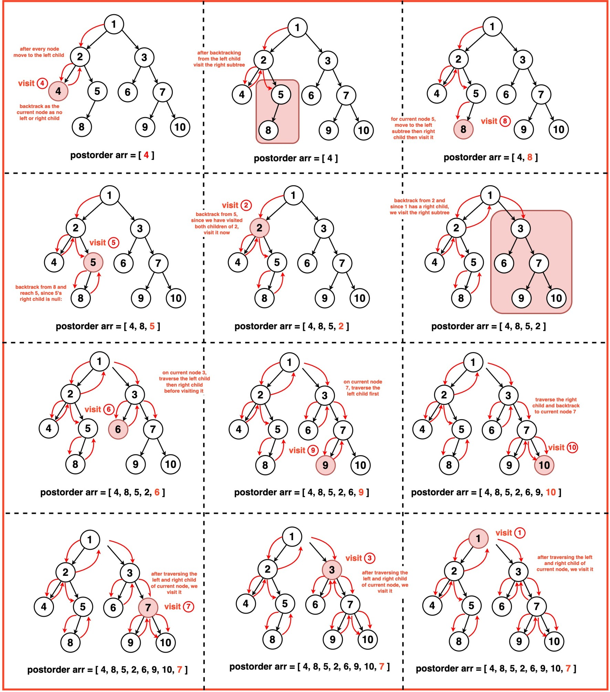
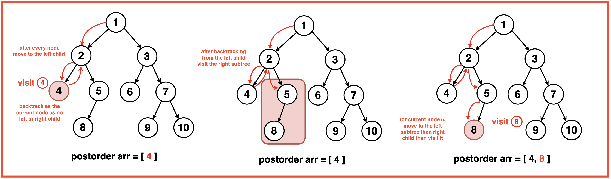
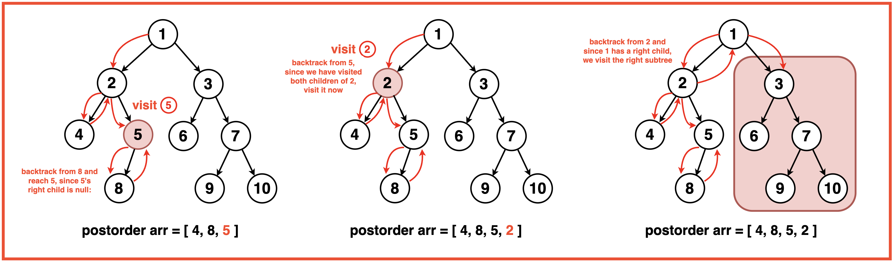
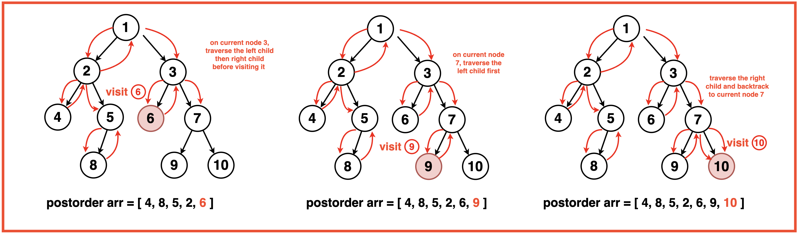
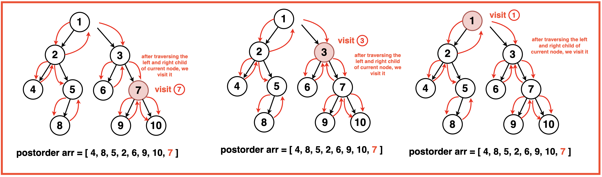

Disclaimer: Don’t jump directly to the solution, try it out
yourself first.
Optimal Approach
Algorithm / Intuition
Postorder traversal, another depth-first method in tree exploration, follows a sequence where the algorithm first explores the left subtree, then the right subtree, and finally visits the root node. In postorder traversal, we visit (or add to the array) the current node after traversing both its left and right subtrees.The sequence of steps in preorder traversal follows: Left, Right, Root.

Base Case: If the current node is null, it means we have reached the end of a subtree and there are no further nodes to explore. Hence the recursive function stops and we return from that particular recursive call.
Recursive Function:
Traverse Left Subtree: Explore the left subtree by recursively invoking the postorder function on the left child of the current node, ensuring a depth-first approach to node exploration.
Traverse Right Subtree: After fully traversing the left subtree, we move on to the right subtree, invoking the postorder function on the right child of the current node.
Process Current Node: After exploring the children of the current node, we process it by adding its value to the postorder traversal array.

Algorithm:
Step 1: Check for base case that if the current node is null, exit the void function.

Step 2: Traverse the left subtree using a recursive postorder call on the left child.

Step 3: Traverse the right subtree using a recursive postorder call on the right child.

Step 4: Add the value of the current node to the postorder traversal array.This recursive approach implicitly uses the call stack to handle backtracking while exploring the tree nodes in a postorder manner.
Code
#include <iostream>
#include <vector>
using namespace std;
// Node structure for the binary tree
struct Node {
int data;
Node* left;
Node* right;
// Constructor to initialize
// the node with a value
Node(int val) : data(val), left(nullptr), right(nullptr) {}
};
// Function to perform postorder
// traversal recursively
void postorder(Node* root, vector<int>& arr){
// Base case: if root is null, return
if(root==NULL){
return;
}
// Traverse left subtree
postorder(root->left, arr);
// Traverse right subtree
postorder(root->right, arr);
// Visit the node
// (append node's data to the array)
arr.push_back(root->data);
}
// Function to get the postorder
// traversal of a binary tree
vector<int> postOrder(Node* root){
// Create a vector to
// store the traversal result
vector<int> arr;
// Perform postorder traversal
// starting from the root
postorder(root, arr);
// Return the postorder
// traversal result
return arr;
}
// Function to print the
// elements of a vector
void printVector(const vector<int>& vec) {
// Iterate through the vector
// and print each element
for (int num : vec) {
cout << num << " ";
}
cout << endl;
}
// Main function
int main()
{
// Creating a sample binary tree
Node* root = new Node(1);
root->left = new Node(2);
root->right = new Node(3);
root->left->left = new Node(4);
root->left->right = new Node(5);
// Getting postorder traversal
vector<int> result = postOrder(root);
// Printing the postorder
// traversal result
cout << "Postorder traversal: ";
printVector(result);
return 0;
}
import java.util.ArrayList;
import java.util.List;
// Node structure for the binary tree
class Node {
int data;
Node left;
Node right;
// Constructor to initialize
// the node with a value
Node(int val) {
data = val;
left = null;
right = null;
}
}
public class BinaryTreeTraversal {
// Function to perform postorder
// traversal recursively
static void postorder(Node root, List<Integer> arr){
// Base case: if root is null, return
if(root == null){
return;
}
// Traverse left subtree
postorder(root.left, arr);
// Traverse right subtree
postorder(root.right, arr);
// Visit the node
// (append node's data to the array)
arr.add(root.data);
}
// Function to get the postorder
// traversal of a binary tree
static List<Integer> postOrder(Node root){
// Create a list to
// store the traversal result
List<Integer> arr = new ArrayList<>();
// Perform postorder traversal
// starting from the root
postorder(root, arr);
// Return the postorder
// traversal result
return arr;
}
// Function to print the
// elements of a list
static void printList(List<Integer> list) {
// Iterate through the list
// and print each element
for (int num : list) {
System.out.print(num + " ");
}
System.out.println();
}
// Main function
public static void main(String[] args) {
// Creating a sample binary tree
Node root = new Node(1);
root.left = new Node(2);
root.right = new Node(3);
root.left.left = new Node(4);
root.left.right = new Node(5);
// Getting postorder traversal
List<Integer> result = postOrder(root);
// Printing the postorder
// traversal result
System.out.print("Postorder traversal: ");
printList(result);
}
}
# Node class for the binary tree
class Node:
def __init__(self, val):
self.data = val
self.left = None
self.right = None
# Function to perform postorder
# traversal recursively
def postorder(root, arr):
# Base case: if root is None, return
if root is None:
return
# Traverse left subtree
postorder(root.left, arr)
# Traverse right subtree
postorder(root.right, arr)
# Visit the node
# (append node's data to the list)
arr.append(root.data)
# Function to get the postorder
# traversal of a binary tree
def postOrder(root):
# Create a list to
# store the traversal result
arr = []
# Perform postorder traversal
# starting from the root
postorder(root, arr)
# Return the postorder
# traversal result
return arr
# Function to print the
# elements of a list
def printList(lst):
# Iterate through the list
# and print each element
for num in lst:
print(num, end=" ")
print()
# Main function
if __name__ == "__main__":
# Creating a sample binary tree
root = Node(1)
root.left = Node(2)
root.right = Node(3)
root.left.left = Node(4)
root.left.right = Node(5)
# Getting postorder traversal
result = postOrder(root)
# Printing the postorder
# traversal result
print("Postorder traversal: ", end="")
printList(result)
// Node class for the binary tree
class Node {
constructor(val) {
this.data = val;
this.left = null;
this.right = null;
}
}
// Function to perform postorder
// traversal recursively
function postorder(root, arr) {
// Base case: if root
// is null, return
if (root === null) {
return;
}
// Traverse left subtree
postorder(root.left, arr);
// Traverse right subtree
postorder(root.right, arr);
// Visit the node (push node's
// data to the array)
arr.push(root.data);
}
// Function to get the postorder
// traversal of a binary tree
function postOrder(root) {
// Create an array to
// store the traversal result
const arr = [];
// Perform postorder traversal
// starting from the root
postorder(root, arr);
// Return the postorder
// traversal result
return arr;
}
// Function to print the
// elements of an array
function printArray(arr) {
// Iterate through the
// array and print each element
arr.forEach(num => {
process.stdout.write(num + " ");
});
process.stdout.write("\n");
}
// Creating a sample binary tree
let root = new Node(1);
root.left = new Node(2);
root.right = new Node(3);
root.left.left = new Node(4);
root.left.right = new Node(5);
// Getting postorder traversal
let result = postOrder(root);
// Printing the postorder traversal result
process.stdout.write("Postorder traversal: ");
printArray(result);
Output Postorder traversal: 4 5 2 3 1
Complexity Analysis
Time Complexity: O(N) where N is the number of nodes in the binary tree as each node of the binary tree is visited exactly once.
Space Complexity: O(N) where N is the number of nodes in the binary tree as an additional space for array is allocated to store the values of all ‘N’ nodes of the binary tree.
Video Explanation
Special thanks to Gauri Tomar for contributing to this article on takeUforward. If you also wish to share your knowledge with the takeUforward fam, please check out this article